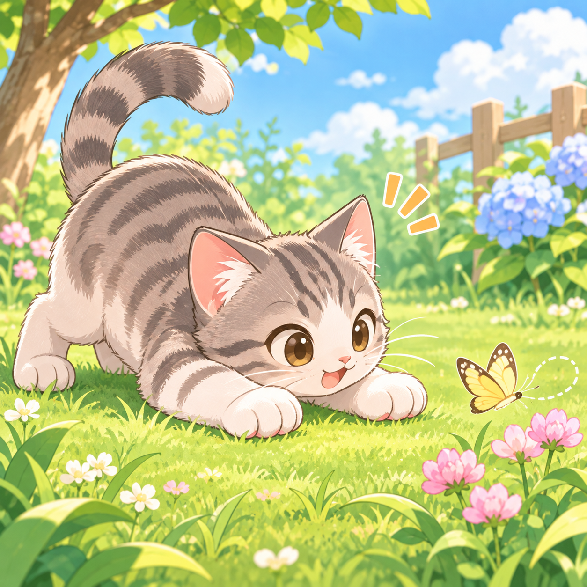
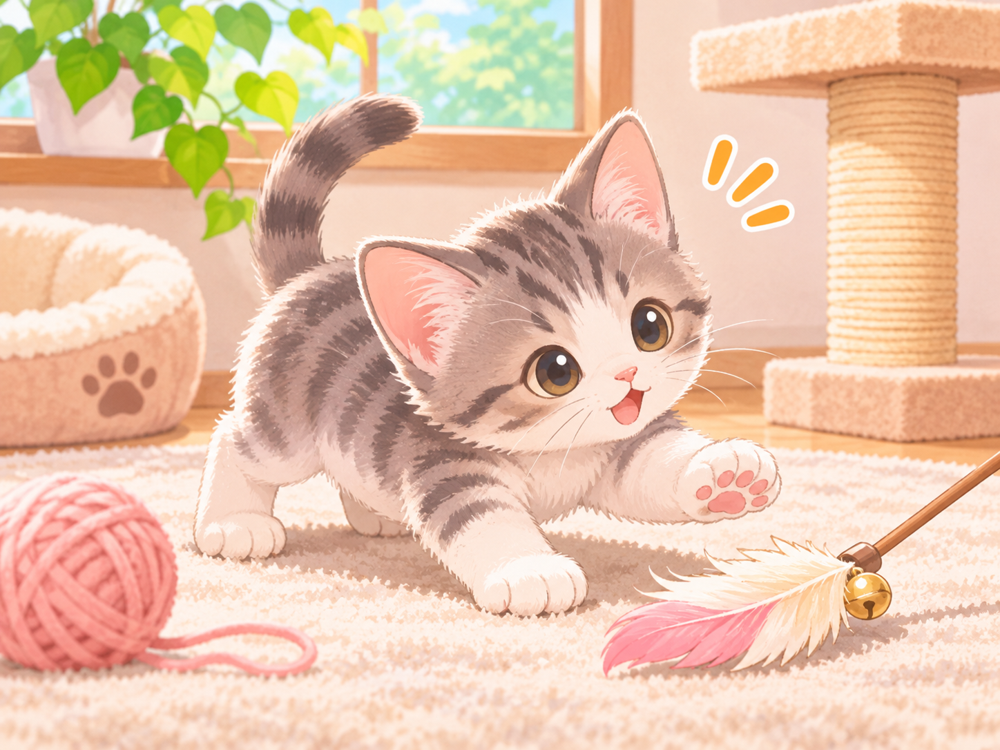
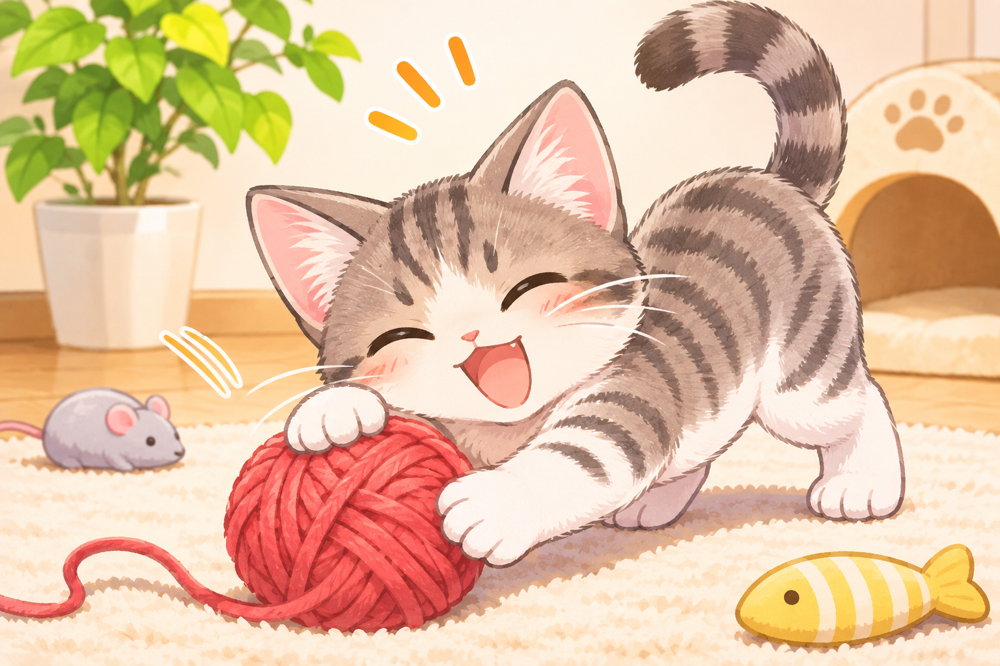
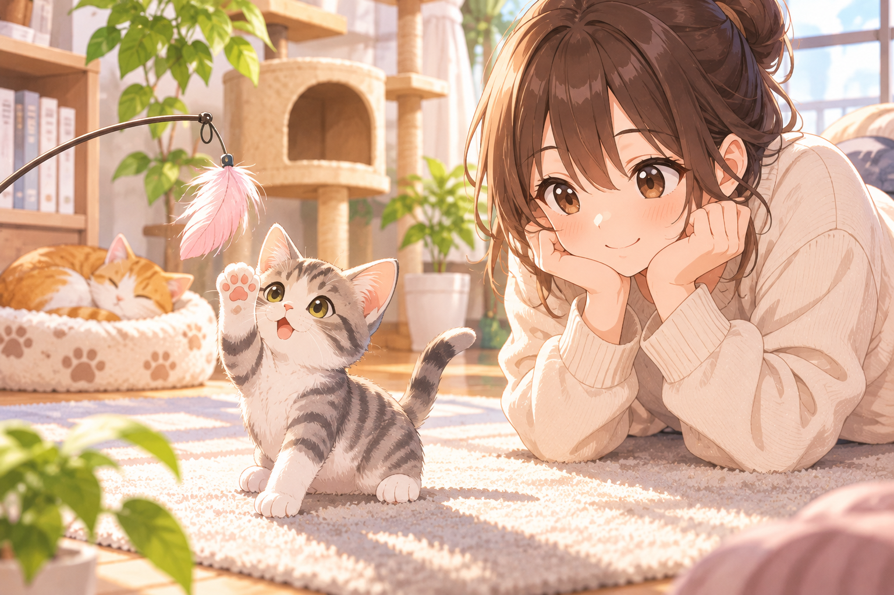
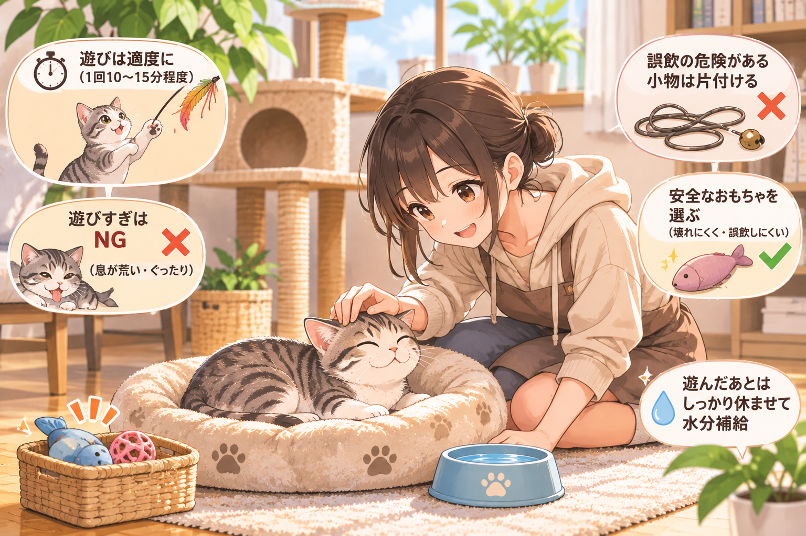

肉食動物である猫は、生まれながらにして狩猟本能を持ちます。
ネズミやトカゲ、野鳥、昆虫などの小動物を捕まえて食事を得るための野生本能で、小さくて素早く動くものに敏感に反応します。

生後50日前後から7ヶ月くらいまでが「じゃれ遊び」の全盛期といわれています。その期間は、風で揺れるカーテンや、壁に映る光や影など動く全てのものに対して敏感に反応します
また子猫時代は、よく食べよく寝る時期でもあり、このときの成長速度は人間の15倍といわれています。

猫との遊び方のコツは、おもちゃで獲物の動きを真似することです。
特に猫は、獲物（おもちゃ）を窮地に追い込むことで、より狩猟本能が掻き立てられるといわれています。

猫によって好みのおもちゃは異なります。素材やスタイルが異なるおもちゃを使い分け、愛猫の好みを観察しましょう。
成長していくにつれ、おもちゃの好みや遊び方が変わる猫もいます。

興味を失った際はしつこくしない
無理に遊ばせようとしない
誤飲に注意する